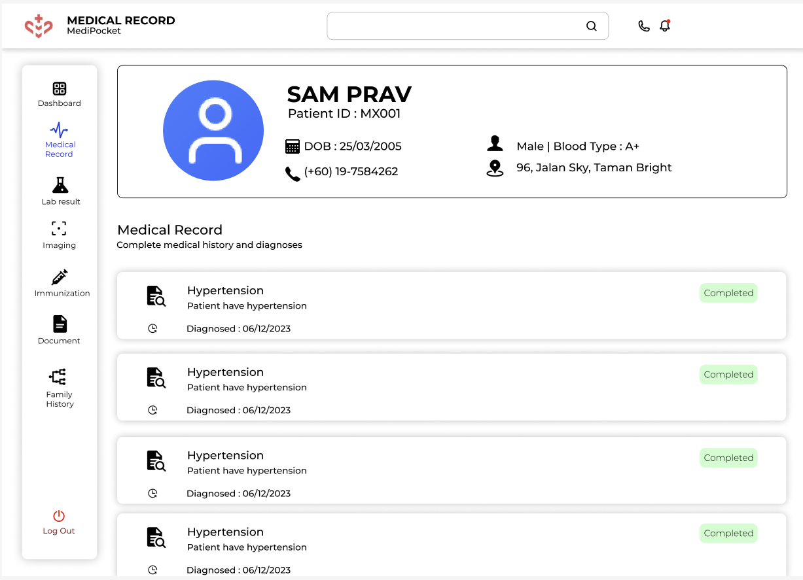
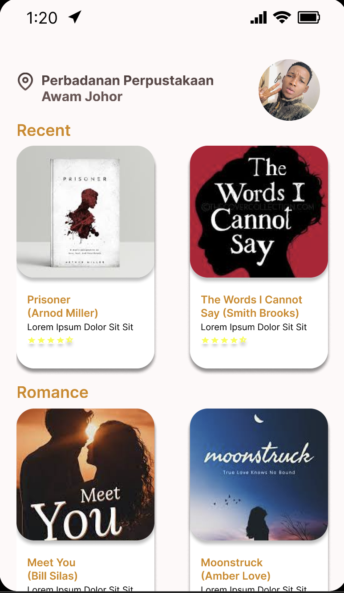
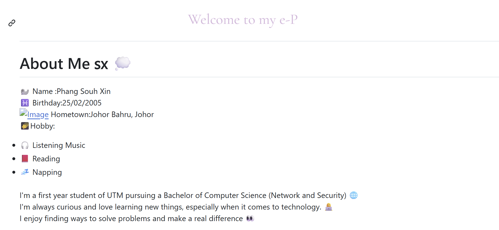

Projects
These projects and experiences include individual and group work, hackathons, and programming competitions, showcasing my skills in software development, system design, and problem-solving.
NexG Godamlah 2.0 Smart ID Hackathon Prototype

A hackathon project proposing a Smart ID solution that integrates healthcare records into a unified digital identity platform. The project involved feasibility analysis, citizen impact research, prototype development, and presentation preparation to demonstrate the practicality of the proposed solution.
Figma, Smart ID, Healthcare Integration, UI/UX Design
CodeRush'25
Participated in a competitive programming competition focused on data structure and algorithms. Solved coding challenges under time constraints, requiring efficient algorithms and strong problem-solving skills.
C++, Arrays, Stack, Queue, Token,Problem Solving, Algorithm Design, Logical Thinking
Integrated Library Interactive System (ILIS)

A proposed Integrated Library Interactive System (ILIS) that integrates book borrowing room reservation, and academic journal services into a single platform. The solution aims to improve accessibility, real-time information sharing and overall user experience.
Figma, Library Management, Resource Booking, Digital Platform
Event-Hall Booking System
A console-based booking system developed using Object-Oriented Programming principles. The system allows users to reserve event halls, manage booking schedules, and generate invoices efficiently. It also includes booking validation and file storage features to ensure data persistence and prevent scheduling conflicts.
C++, OOP, File Handling,Booking Management, Scheduling System, Invoice Generation
Clinic Ticket Management System
A clinic queue management system designed to simulate patient flow and service operations in a healthcare environment. The system handles ticket generation, patient queueing, and service history tracking while applying multiple data structures to improve efficiency. This project strengthened my understanding of data organization and queue-based problem solving.
C++, Queue, Stack, Linked List, BST, Queue Management, Patient Tracking, Data Structures
First ePortfolio in Github

Responsive personal portfolio website developed to showcase academic projects, technical skills, and extracurricular activities. The portflio was designed with a clean and user-friendly interface while applying fundamental web development concepts. This project also served as an introduction to building and deploying personal websites using GitHub.
HTML,Github,Portfolio, Interactive design, Personal Branding